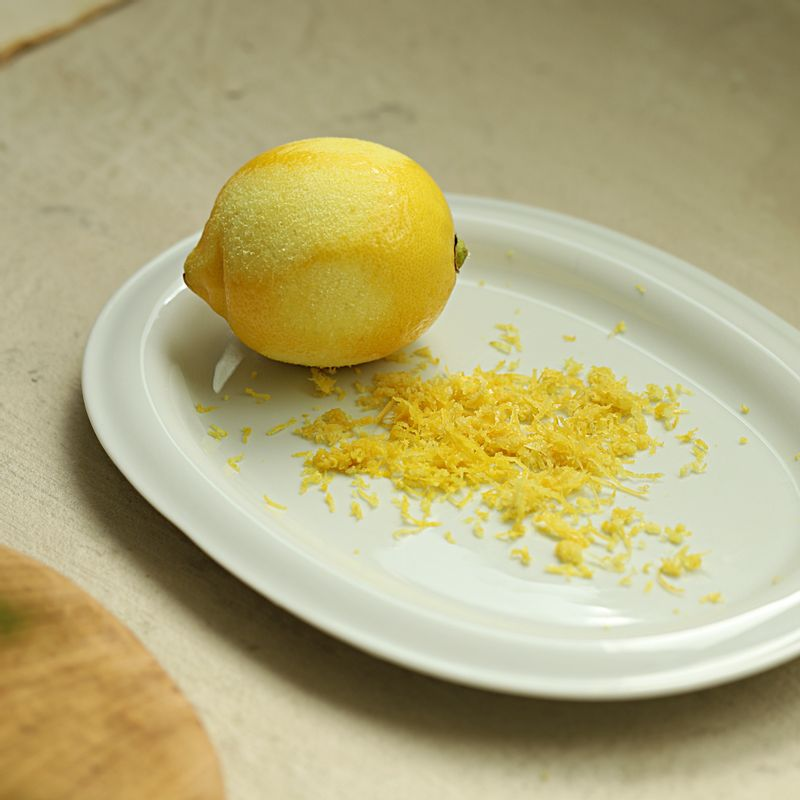
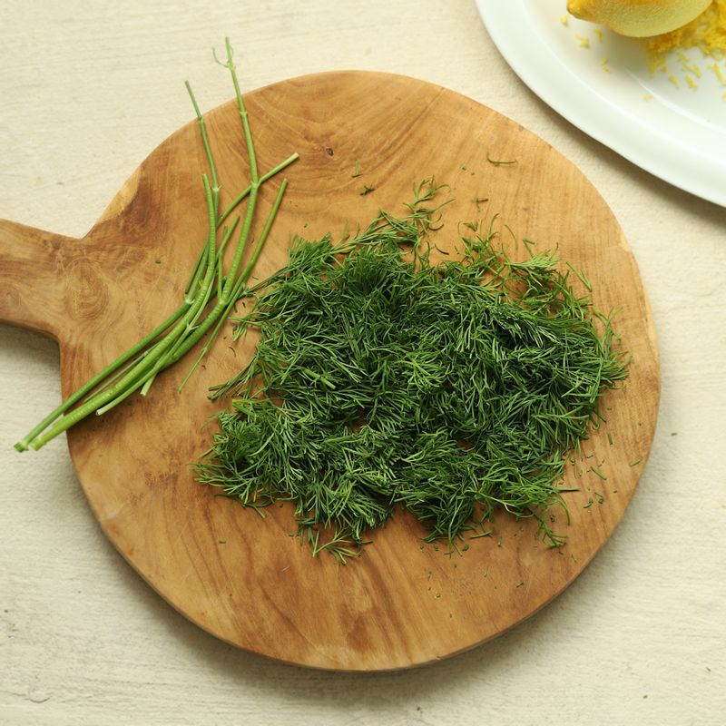
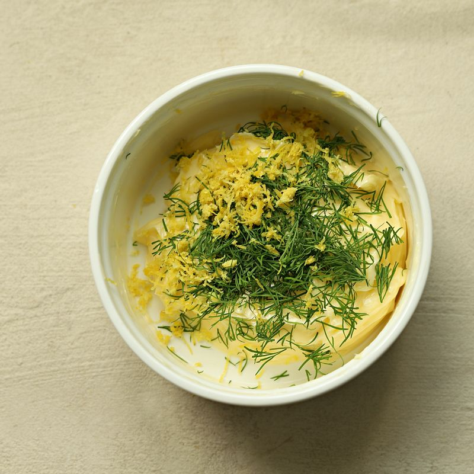
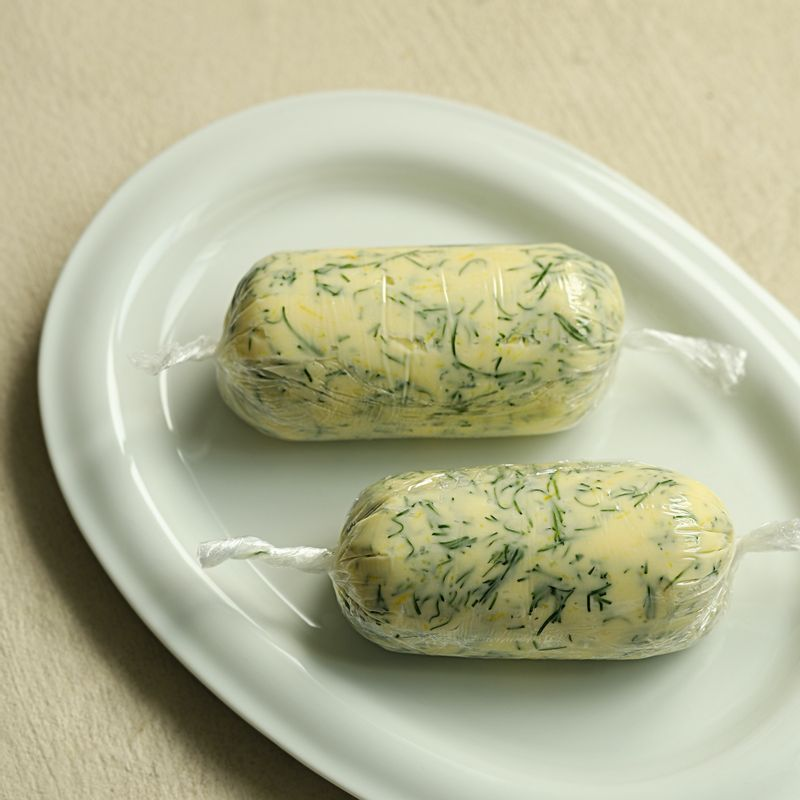
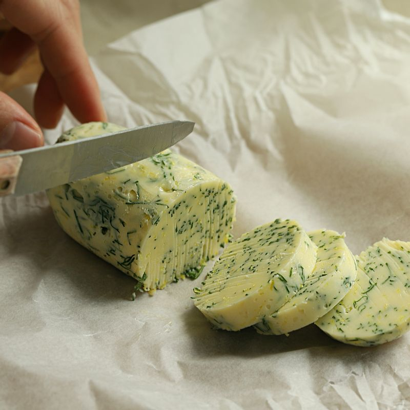
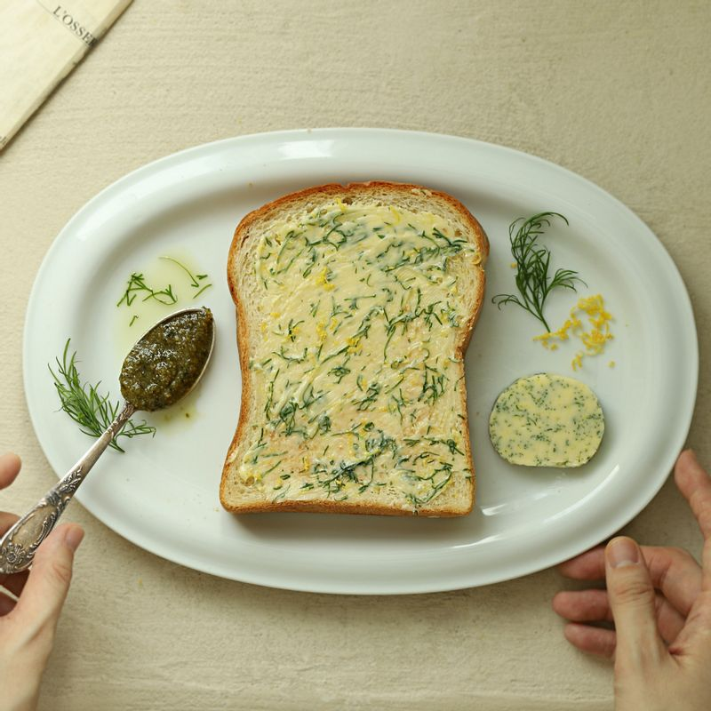

-

레몬을 깨끗이 닦은 후 강판에 껍질을 갈아주세요.
-

깨끗이 씻은 딜은 두꺼운 줄기 부분을 제외하고 물기를 제거한 후 잘게 다져주세요.
-

볼에 버터와 레몬 제스트, 레몬즙, 딜을 넣어 잘 섞어주세요.
-

랩에 적당량씩 (150g) 넣어 감싼 후 종이호일에 한 번 더 사탕처럼 돌돌 말아주세요.
-

냉장 보관하여 단단해지면 적당량씩 잘라 사용해주세요.
(tip. 냉동 보관 시 1개월까지 보관 가능하며 한 조각씩 잘라 밀봉하여 보관하면 더욱 꺼내 먹기 편하답니다)
-

빵에 발라먹거나 해산물 요리할 때, 스테이크 등의 요리에 활용하여 맛있게 만들어 드세요.